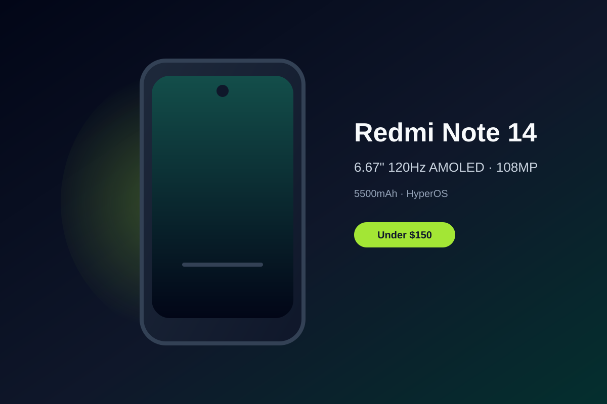

Xiaomi Redmi Note 14 Review: 120Hz AMOLED and Long Battery Under $150
The Redmi Note 14 delivers a bright 120Hz AMOLED screen, capable 108MP camera, and a 5500mAh battery that keeps going, all at a price that regularly dips under $150 on Amazon.
Budget phones have improved dramatically, and the Xiaomi Redmi Note 14 stands out by packing a genuine AMOLED panel into the sub-$150 range. Street prices for unlocked global models often land between $140 and $160, giving buyers a large, fluid display without the usual LCD compromise.
The 6.67-inch 120Hz AMOLED is the clear highlight. Colors pop, blacks are deep, and the high refresh rate makes scrolling and everyday navigation feel smoother than the price suggests. Peak brightness is high enough for outdoor use, and the overall viewing experience feels closer to mid-range devices than typical entry-level handsets.
Battery life is another strong point. The 5500mAh cell easily covers a full day of mixed use and frequently stretches into a second day with lighter workloads. Combined with 33W charging, downtime is minimal. For students, commuters, or anyone who wants to avoid constant top-ups, this endurance is practical and welcome.
The 108MP main camera handles daylight shots well, producing detailed images suitable for social sharing. HyperOS (based on Android) keeps the interface relatively clean and responsive on the Helio G99-class chipset, with solid multitasking for typical apps. Software support and bloat levels vary by region and seller, so checking the exact model is wise.
If you prioritize a vibrant high-refresh display, long battery, and capable everyday performance over flagship cameras or the latest processor, the Redmi Note 14 is a compelling budget pick under $150. It delivers more visual polish and stamina than many rivals at the same price.
Key Takeaways
- Price Range: ~$140 – $160 (Amazon unlocked global models)
- Display: 6.67-inch 120Hz AMOLED
- Battery: 5500mAh with 33W charging
- Camera & Software: 108MP main sensor, HyperOS on Android, solid daily performance